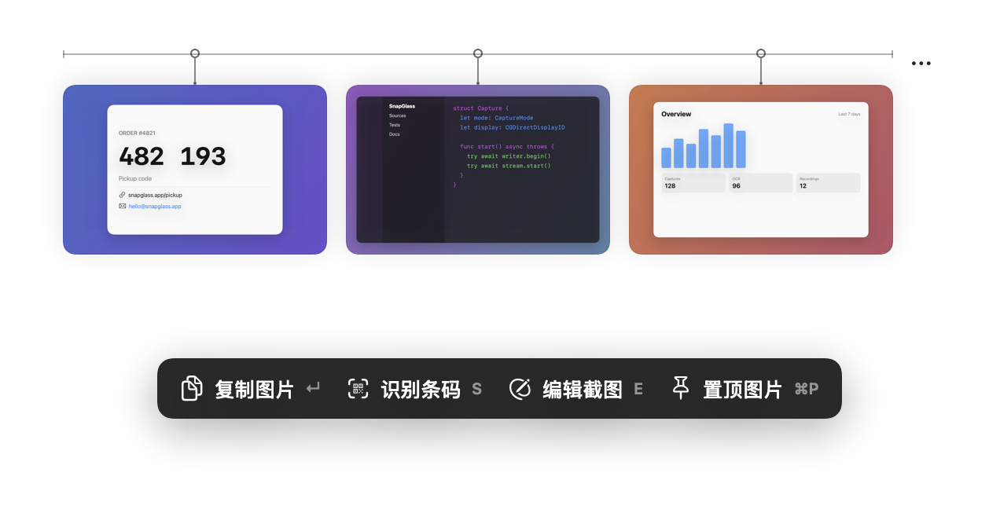
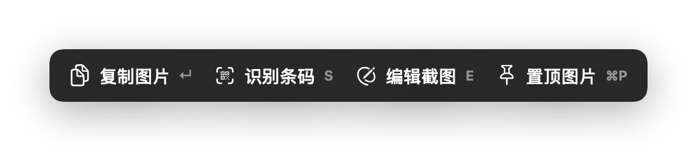
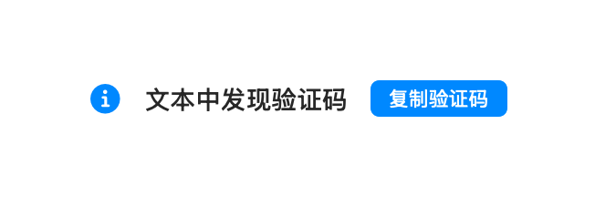
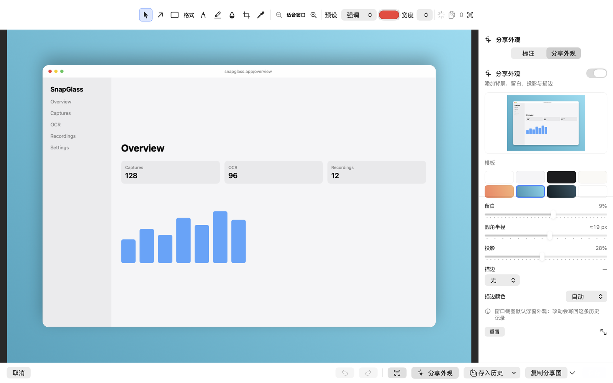
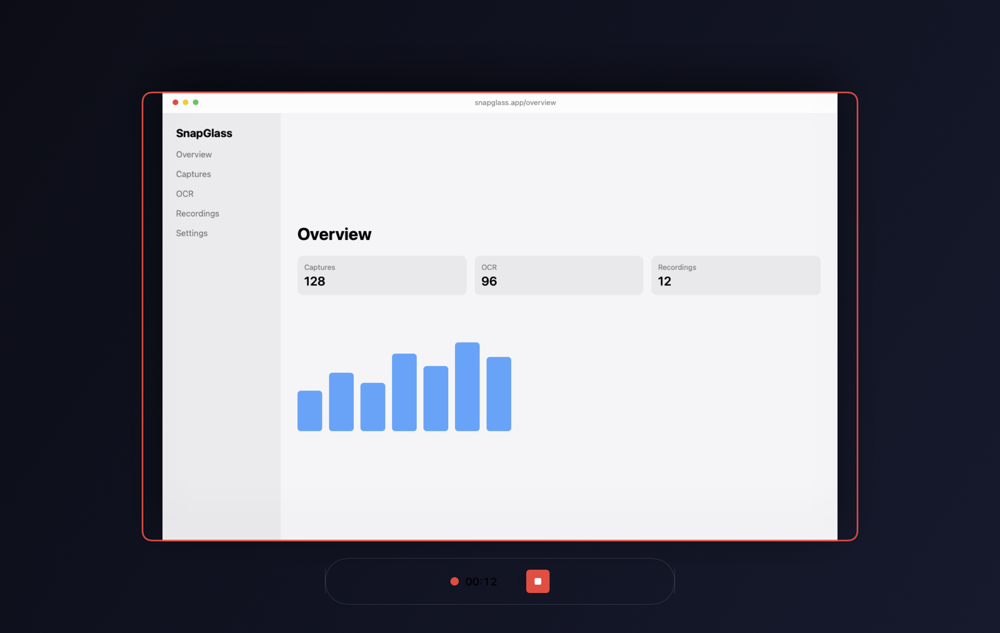

Capture & scrolling capture
Region, freeform lasso, window, full screen, all displays; scrolling shots are captured frame by frame and stitched. Built on ScreenCaptureKit, with mixed scaling and Retina pixels.
PNG / JPEG · 1x / 2xSnapGlass turns capture, scrolling long shots, OCR, barcodes, screen recording, and audio recording into one workflow. Recognition happens on your Mac — no telemetry, no background uploads.
On first launch, allow it in System Settings → Privacy & Security.

Shelf + selection action bar · drag out as a real file
Workflow
The system tool leaves the image on your Desktop. SnapGlass puts it into the next step: shelf it, read it, mark it up, or drag it into the window you are already using.
Region, window, full screen, all displays, or a scrolling long shot. On mouse-up, the action bar is right there.
Recent shots wait at the screen edge in order. Reorder, use the keyboard, follow across displays, or collapse to a slim handle.
Drag a card out and it becomes a real file. Drop it into Finder, an upload area, WeChat, Feishu, or Slack.
Features
No account, no cloud sync, no subscription. Every feature starts from the question: what happens after this screenshot?
Region, freeform lasso, window, full screen, all displays; scrolling shots are captured frame by frame and stitched. Built on ScreenCaptureKit, with mixed scaling and Retina pixels.
PNG / JPEG · 1x / 2xRecent shots wait at the screen edge. Reorder them, drag one out as a file, use keyboard mode, follow across displays, adjust count and opacity.
Drag out as a fileApple Vision runs locally; huge images are tiled automatically. When it finds a code, link, or email, it offers copy, open, or compose.
Fully offlineEight tools with full undo/redo. Background, padding, radius, shadow, and stroke preview live on the canvas; copy and post.
New in 1.7QR, Code128, EAN, PDF417, Aztec, DataMatrix. Press S in the action bar, R to recapture animated codes, then copy or open.
No editor needed⌘P pins the selection to your screen. Move, zoom, change opacity, right-click to copy image or text; pinned content stays out of recordings and later captures.
10%–800%Display, window, or region; system audio, microphone, or both. Atomic publish, 10-second checkpoints, 59-minute segments, and automatic save if the UI freezes.
MP4 / M4AHistory is encrypted locally with AES-256-GCM; the key stays on this Mac. Full OCR text is off by default, and exports can redact.
No telemetrySwiftUI interface; Liquid Glass on macOS 26 with graceful fallback. Simplified Chinese, English, Japanese, and Korean.
UniversalInterface
The action bar appears next to the selection; OCR results offer the next step. Chinese UI shown.




v1.8
Screenshots, audio, screen recordings, colour picks and unfinished recordings no longer live in separate windows.
Sidebar categories, timeline and grid, search, filters, sorting, and an inspector; favourites and renaming in place.
Tags and notes, merging sessions of the same media type, a live recording banner, retention and storage panels, and Space Quick Look.
Move to Trash and restore, or delete permanently; entries clear automatically after 30 days and survive a relaunch.
Download
SnapGlass v1.8.0 · Universal · 20.2 MB. macOS 13.0 or later. On first launch, allow it in System Settings → Privacy & Security.
FAQ
Open System Settings → Privacy & Security, click “Open Anyway” in the security section, and confirm. SnapGlass has no Apple Developer ID; this is the normal first-run flow for a self-signed app. The fixed certificate means later automatic updates do not repeat it.
Screen Recording covers screenshots, scrolling capture, screen recording, and system audio. Microphone is needed only when the microphone is selected as an audio source. Denying one permission disables only that feature.
No. Capture uses ScreenCaptureKit locally, OCR uses Apple Vision on-device, and barcodes use the local Vision barcode framework. There is no telemetry and no background upload. SnapGlass connects only when you check for updates, download a Tesseract language pack, or explicitly enable automatic update checks (at most once a day).
Releases are Universal binaries (arm64 + x86_64) and require macOS 13.0 or later. The UI supports Simplified Chinese, English, Japanese, and Korean, and follows the system language.
Screenshots and OCR text live in ~/Library/Application Support/SnapGlass/History/v2/ and are encrypted with AES-256-GCM; thumbnails are not encrypted. Screen and audio recordings live in the folder you choose and are not encrypted. See the Privacy Statement.
Check that the source is a display, window, or region and that system audio is enabled; system audio needs Screen Recording permission. If system audio fails to start, SnapGlass keeps recording video and tells you after saving that the video was saved without system audio, rather than discarding the whole recording.
If you only need capture-and-copy, the system tool is enough. Use SnapGlass for the shelf workflow, scrolling capture, OCR with next-step actions, share appearance, or screen and audio recording. They coexist without shortcut conflicts.
Quit SnapGlass and move the app to the Trash. To remove local data, also delete ~/Library/Application Support/SnapGlass/, ~/Library/Preferences/com.snapglass.app.plist, and ~/Library/Logs/SnapGlass/. Screen and audio recordings live in the folder you chose and must be deleted separately.